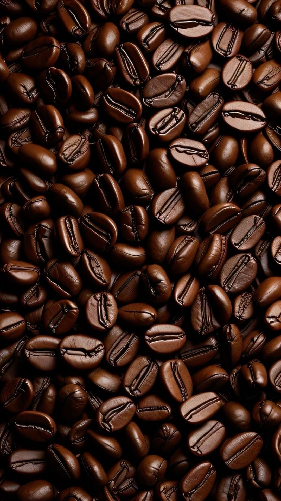
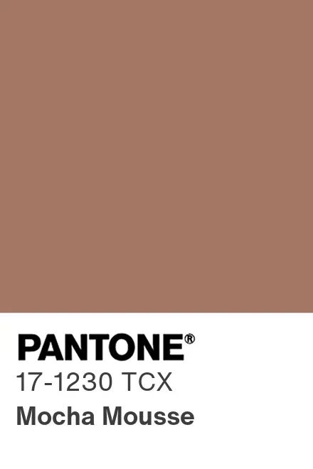
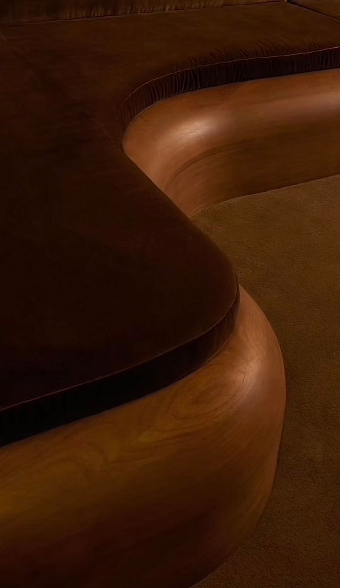
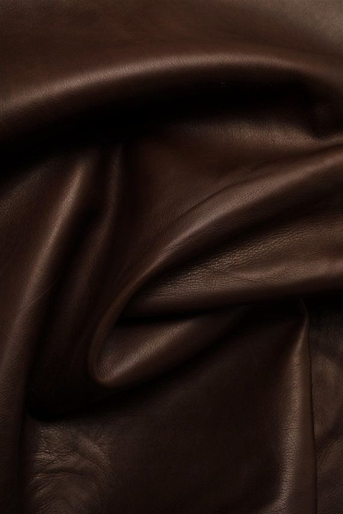
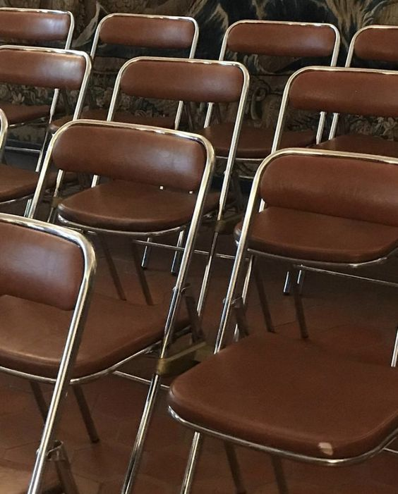
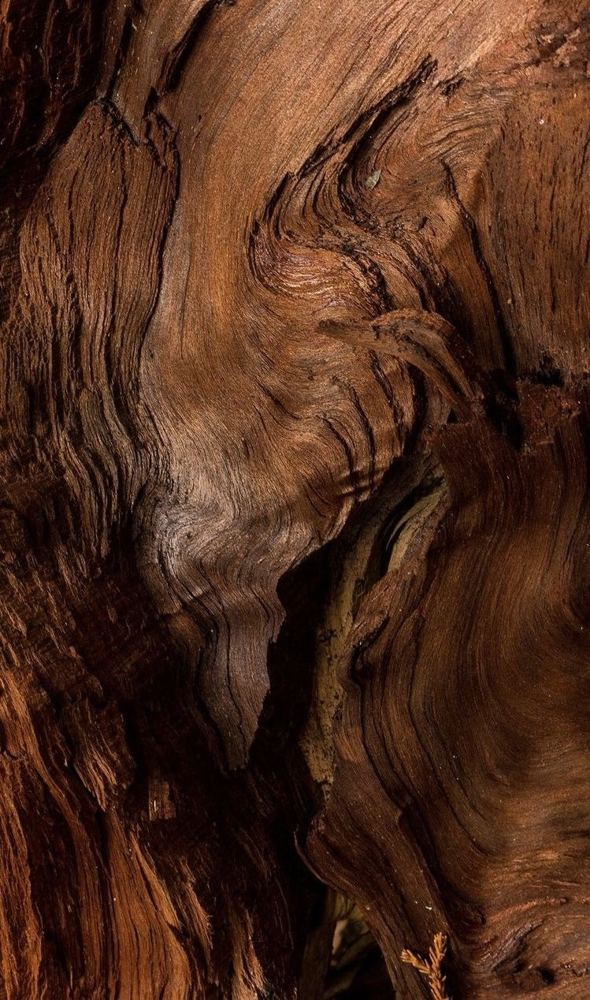

Chocolate Brown Obsession
My obsession with this has been slowly developing. It al started with me randomly wanting a brown suède coat. Why? that's answer i can't quite give you. Was it a quiet influence? A slow development from my hatred of the pantone colour of the year.
Although my hatred is still very much alive, love and hate live on the same street. I found my self a few houses further loving the company and being deeply infatuated. It's such a rich and velvety colour it makes my froth at the mouth.
It has this a deepness and richness you can't always get with an all black ensemble. Suffice it to say; I've been regularly stepping away from my signature non-colour, black. And just between us girls: I'm afraid it might have me venturing a bit more onto other complementary colours..
But for how much i love a ton-sur-ton outfit im not thát worried to be completely honest. I have however been growing my chocolate brown collection. Neededly might I add. By that i mean that the items I've been adding have been actual things I need.
I recently lost my favourite and only headphones. I left on a train while being very chatty and very sleepy. I hung them on the arm rest of my seat, while thinking I'm probably going to forget that and immediately forgetting I thought that.
Unfortunately fortunate I now needed new ones. Now, I've been wanting the chocolate brown version of the ones I had, for a while. Since before my current obsession. Proof it's been an unknowingly slow burn.
So of course, I ordered them immediately. And let me tell you, they arrived and they're even more gorgeous than I imagined. That deep, warm chocolate tone against my winter coats? *Chef's kiss*. It's like the universe was telling me: "See? Sometimes losing things leads you exactly where you need to be."
What started as a random craving for a brown suède coat has turned into a full-blown colour affair. And honestly? I'm not mad about it. Sometimes the best style evolutions are the ones that creep up on you slowly, the ones you don't see coming until you're already completely smitten.





